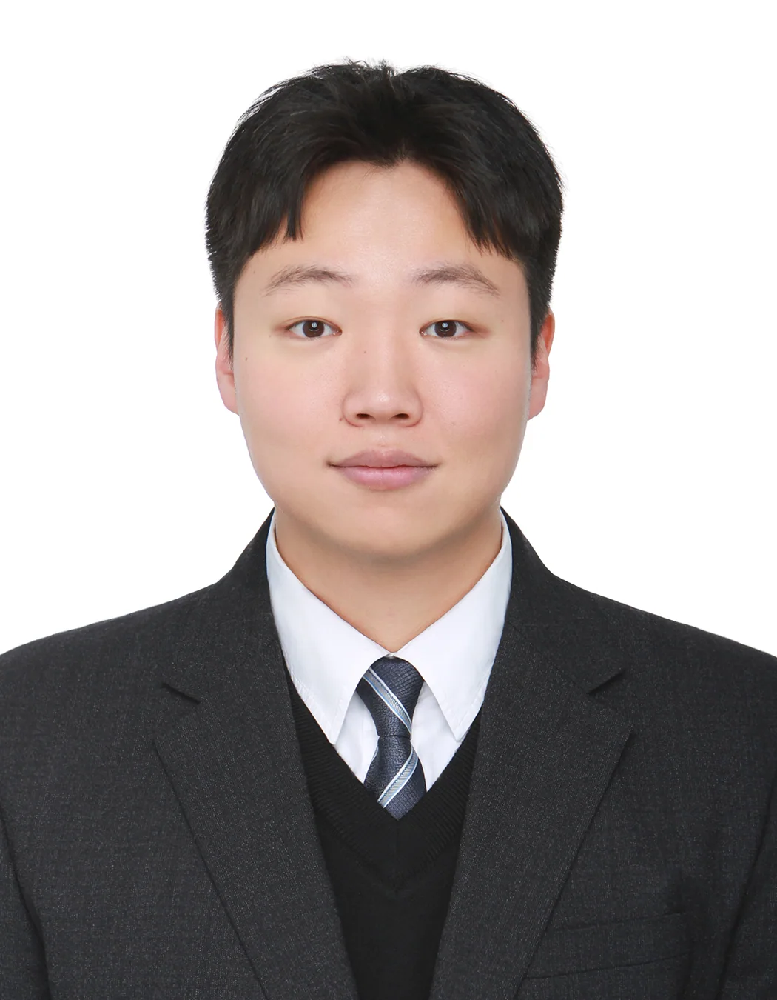
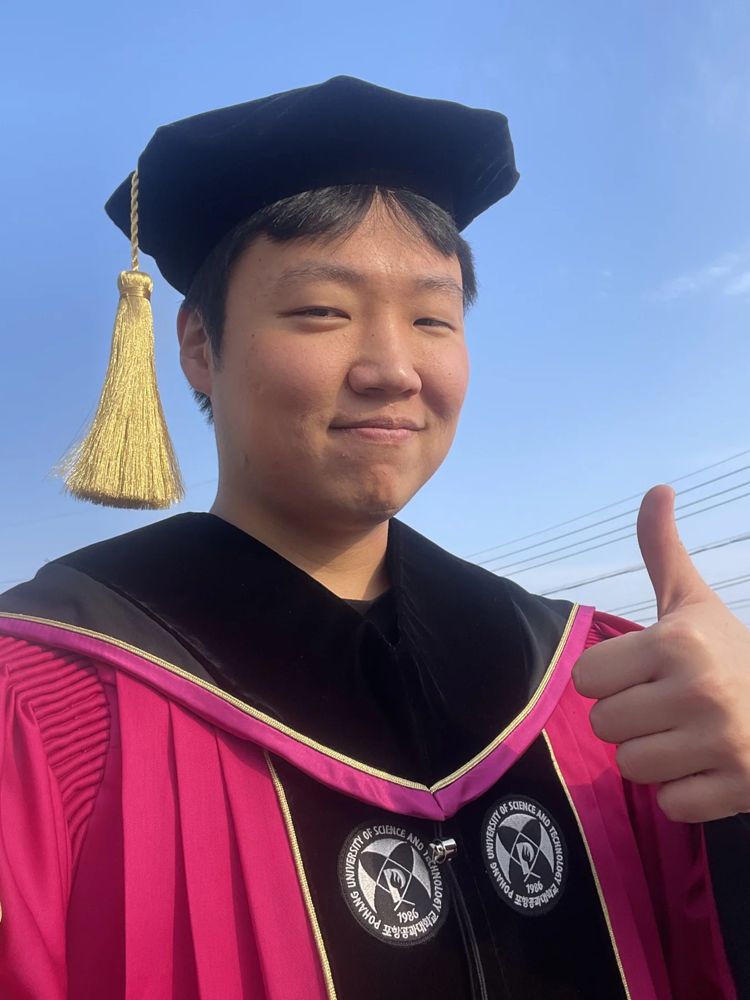
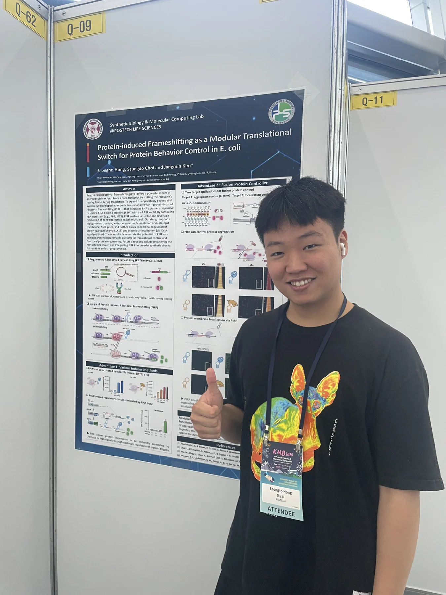
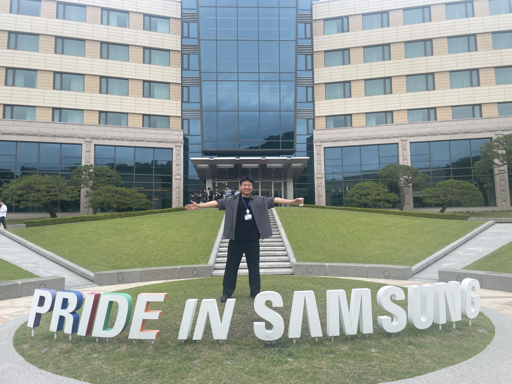
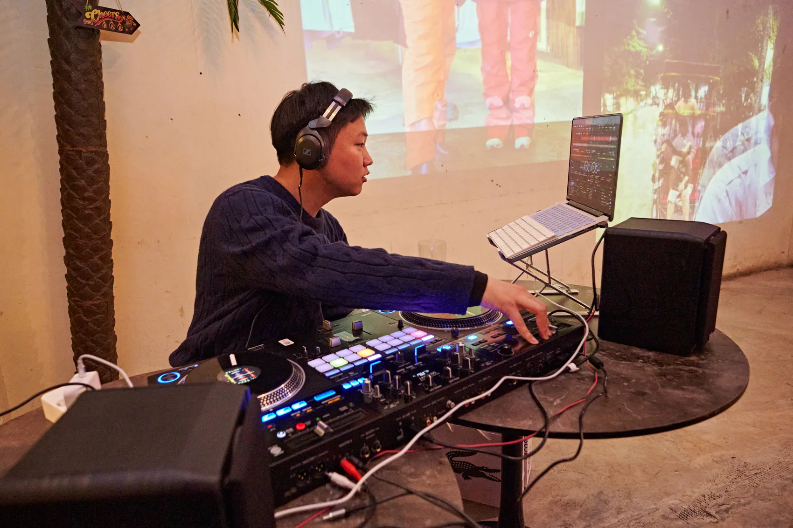
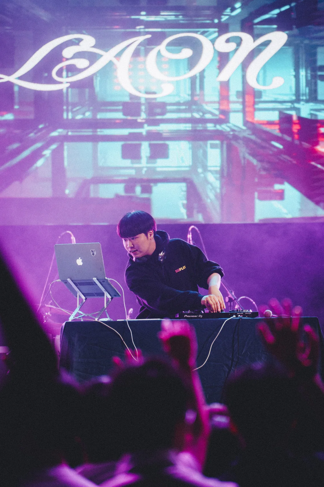
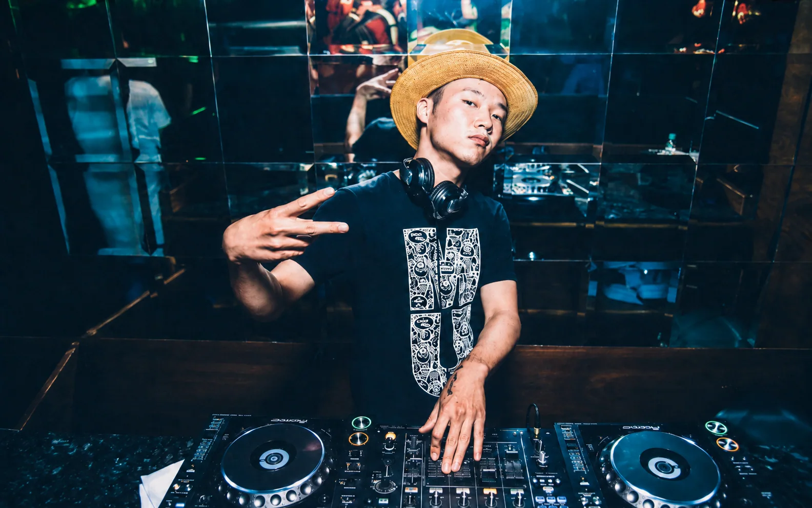
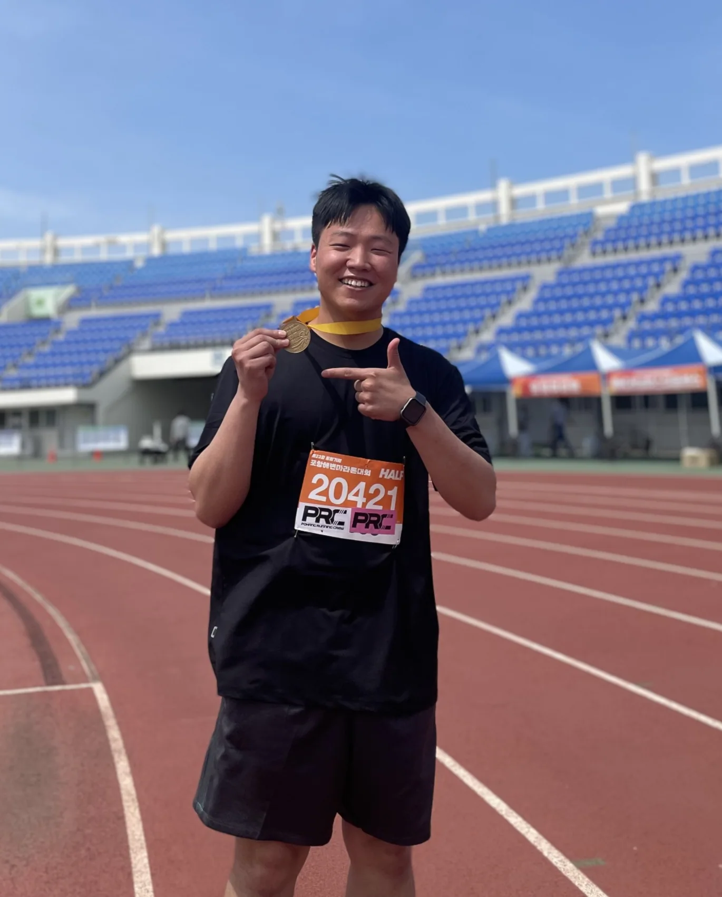

FIELD 01 / BIOTECH
Science meets
strategy.
ADC·DAC 등 차세대 바이오 기술과 혁신 플랫폼을 이해하고, 협력 가능성과 전략적 의미를 살펴봅니다.
안녕하세요, 홍성호입니다.
생명과학을 연구하고, 바이오 산업의 가능성을 탐색하며, AI로 새로운 일의 방식을 만들고 있습니다. 음악을 통해 사람들과 연결되는 순간도 좋아합니다.

SCIENCE × SOUND × IDEAS과학적 호기심을 바탕으로, 기술과 비즈니스 그리고 창작 사이의 연결점을 찾습니다.
저는 POSTECH에서 생명과학 박사과정을 거치며 RNA 기반 합성 유전자 회로를 연구했습니다. 지금은 삼성바이오에피스 Open Innovation 업무를 통해 새로운 기술의 가치와 협력 가능성을 살펴보고 있습니다.
관심은 연구실과 회사에만 머물지 않습니다. 반복되는 일을 더 똑똑하게 만드는 AI 자동화, 아이디어를 실제 서비스로 발전시키는 프로젝트, 그리고 음악으로 사람들을 이어주는 DJing까지. 분야를 넘나드는 시도 자체를 즐깁니다.
지나온 경험들은 서로 다른 길이 아니라, 새로운 문제를 바라보는 관점을 더해준 과정이었습니다.
RNA 기반 합성 유전자 회로와 생명과학 연구를 통해 복잡한 문제를 구조화하고 검증하는 사고방식을 익혔습니다.
헬스케어 분석 자동화 아이디어를 실제 프로젝트로 연결하며 연구 바깥의 문제 해결을 경험했습니다.
바이오·헬스케어 기업 및 기술의 투자 매력도를 검토하며 시장·경쟁 환경, 사업성, 기업가치 평가 관점을 확장했습니다.
외부 기술 평가, 협력 기회 검토, 펀드 관련 업무 및 AI 기반 업무 자동화에 참여하고 있습니다.



좋은 아이디어를 발견하는 일뿐 아니라, 이를 판단하고 실행할 수 있는 형태로 바꾸는 데 관심이 있습니다.
ADC·DAC 등 차세대 바이오 기술과 혁신 플랫폼을 이해하고, 협력 가능성과 전략적 의미를 살펴봅니다.
AI Agent, Subagent, 업무 자동화의 실용적 적용을 탐구하며 반복 작업을 더 효율적인 프로세스로 전환합니다.
분석 도구, 인터랙티브 웹 프로젝트, 업무용 프로토타입 등 생각을 작동하는 결과물로 만드는 것을 좋아합니다.
음악은 제게 또 하나의 실험실이자, 사람과 감정을 연결하는 언어입니다.
DJing은 단순한 취미를 넘어 제가 몰입하고 표현하는 방식입니다. 서로 다른 곡의 리듬과 분위기를 연결하듯, 일상에서도 다양한 분야의 아이디어를 이어 붙이는 것을 즐깁니다.
DJourney라는 글 시리즈를 통해 동료들에게 DJ의 세계를 쉽고 재미있게 소개하고 있습니다.
공연 현장과 음악에 몰입하는 순간들.



좋은 음악을 고르는 것에서, 새로운 흐름을 만들어내는 것까지.
모르는 것을 배우는 데서 멈추지 않고, 직접 만들고 시험하면서 이해합니다.
과학, 산업, 기술, 음악 사이의 예상 밖 연결점에서 새로운 기회를 발견합니다.

러닝과 운동은 일상을 재정비하는 시간입니다. 연구실 밖에서도, 무대 밖에서도 계속 배우고 새로운 것에 도전합니다.
새로운 기술, 재미있는 아이디어, 음악 이야기까지. 서로 다른 경험이 만나는 대화는 언제나 환영합니다.